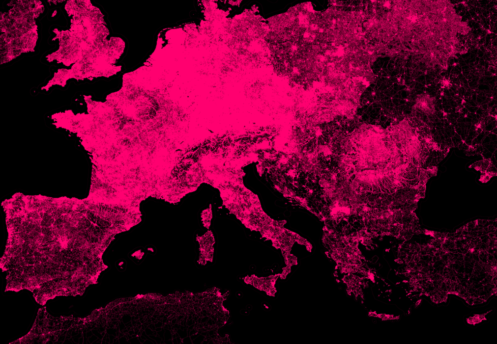
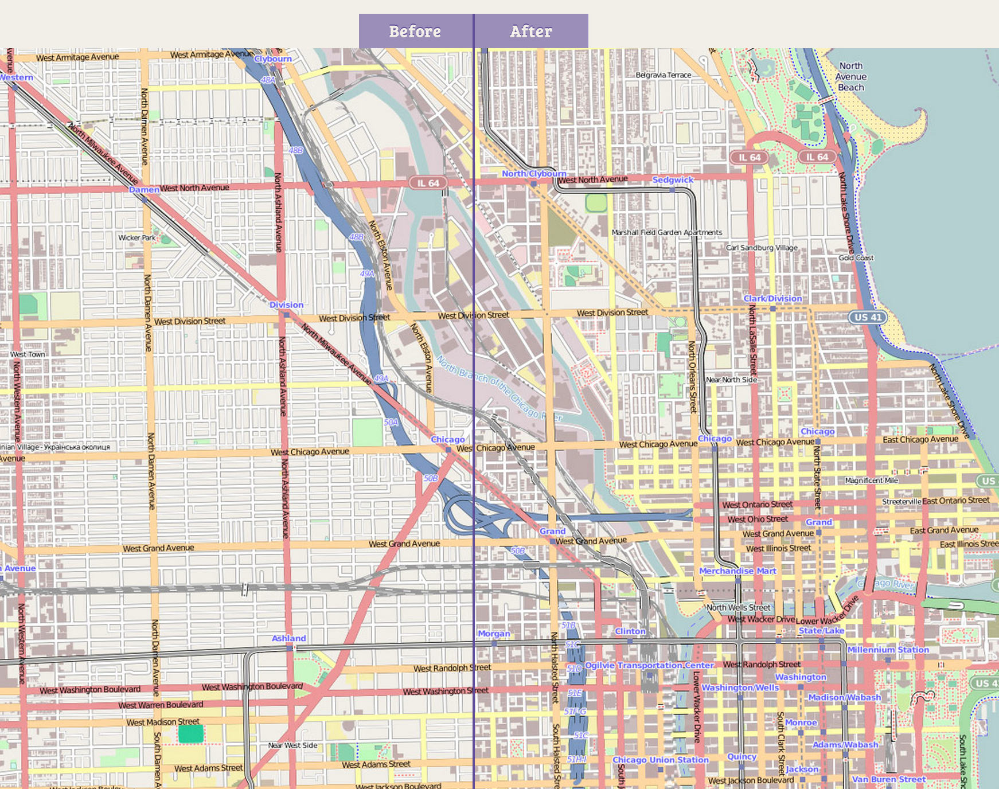
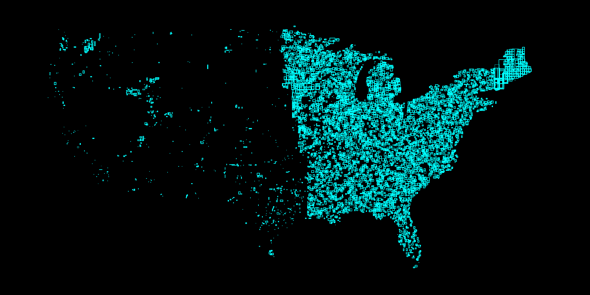
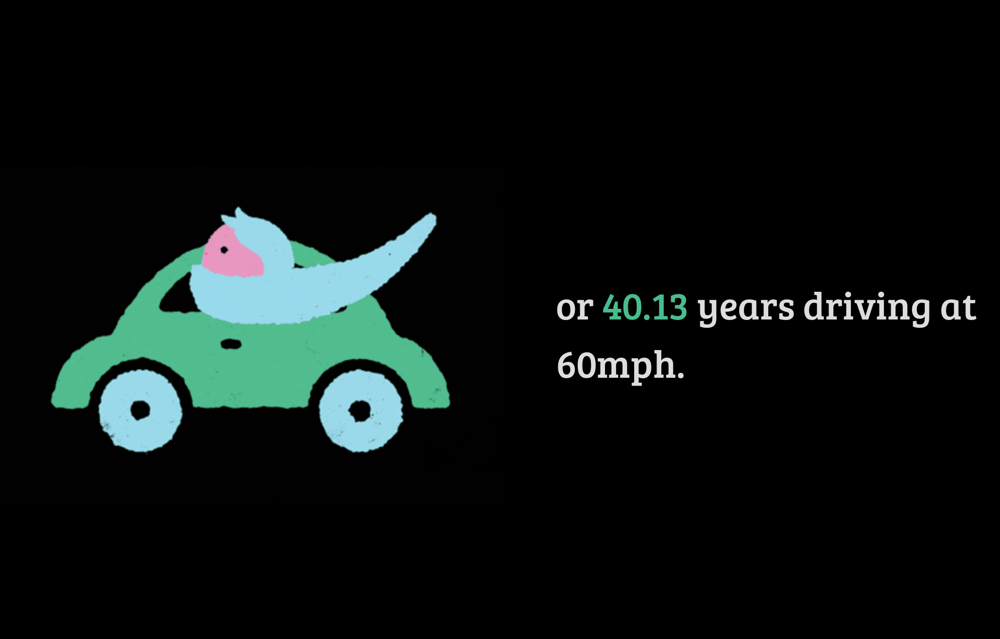
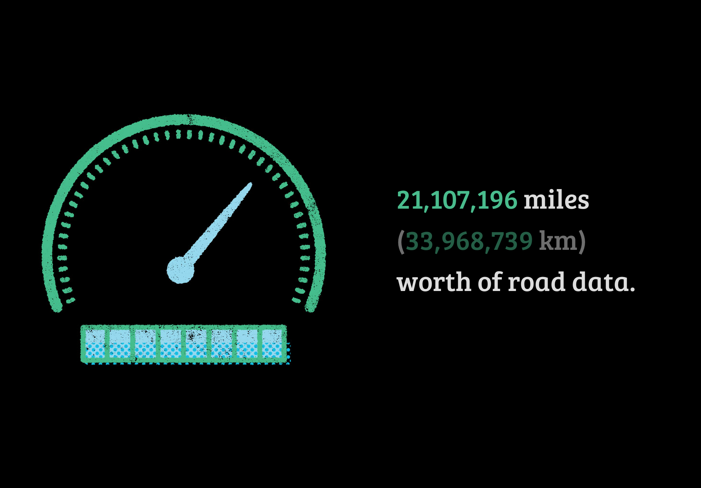
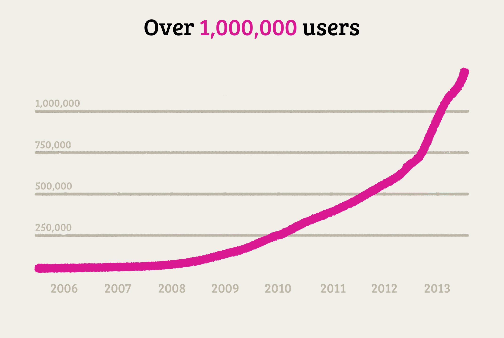

Building The OSM Data Report
mapbox.com/ osm-data-report
we know OSM is great
how do we tell everyone else?
The OSM Data Report tells the story of OSM
(especially in the USA)
to start: the themes

Userbase
Data
sound familiar?
a question of making things beautiful
so they are conversations
here's what we made
road updates
Chicago

'Inequality'
bot-mode name expansion
St → Street

21 million miles of roads


toolz!
sometimemachine → d3
planet.osm → python → sqlite → node.js + node-canvas
github.com/ tmcw/sometimemachine
github.com/ tmcw/sometime-scripts
var fs = require('fs');
var moment = require('moment');
var argv = require('optimist').argv;
var sqlite3 = require('sqlite3').verbose();
var db = new sqlite3.Database(argv._[0]);
var bboxes = [];
db.each(('select * from osm_changeset where user_id=451693;'),
function(err, row) {
bboxes.push([
row.min_lon,
row.min_lat,
row.max_lon,
row.max_lat]);
}, function() {
fs.writeFileSync('bboxes.json', JSON.stringify(bboxes));
});
inkscape
/but the real graphic is/
Growth

what is growth?
signups?
contributors?
contributions?
ideally it's signups → contributors
at best...
we're presenting
an honest but limited facet of the truth

conclusions
the volume of OpenStreetMap is dominated by experts
but the volume of new mappers is significant and increasing
bots & imports are vital for making things work
the hope is that tools like iD will increase conversion rates
/cutting room floor/
/tabs/
thanks!